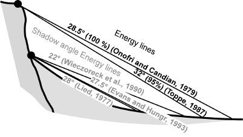

The intersection between the topographic profile and the line starting from the point of detachment with a certain angle to the horizontal line defines the point of maximum propagation (Evans and Hungr, 1993; Jaboyedoff and Labiouse, 2003). The angle of inclination and the line of propagation are defined as zenith angle and shadow zone. This script defines rockfall zones from a digital elevation model (DEM) and vector layer containing starting point or points.

Energy line used for the cone method from the top or the bottom of a cliff (shadow angle), according to various authors (Image from Jaboyedoff and Labiouse, 2003)
Digital Elevation Model = name
Starting points = name
Shadow angle = integer
Reduction value = double
Number of boulders = integer
Rock mass = double
Output prefix = string
Buffer distance = integer
r.droka generates 5 raster maps and a vector map. The names of all output maps start with the prefix defined by the parameter prefix followed by the name of map
FILIPELLO A., GIULIANI A., MANDRONE G. (2010) - Rock Slopes Failure Susceptibility Analysis: From Remote Sensing Measurements to Geographic Information System Raster Modules. American Journal of Environmental Sciences 6 (6): 489-494, 2010 ISSN 1553-345X 2010 Science Publications.
JABOYEDOFF M., LABIOUSE V. (2003) - Preliminary assessment of rockfall hazard based on GIS Data. Proceeding of the 10th ISRM Congress, South African Inst. Min. Met., Johannesburg, pp: 575-578
EVANS, S.G., HUNGR O. (1993). The assessment of rock fall hazard at the base of the talus slope. Can. Geotech. J., 30: 620-636. DOI: 10.1139/t93-054
Andrea Filipello, University of Turin, Italy
Daniele Strigaro, University of Milan, Italy